Exam preparation
Country-specific question banks, aircraft and airline practice.

Pre-flight checks 0%

Early accessPhase 1 · Early access open
The ground school, mentor and crew room for student pilots, all in one place. Exam practice, cadet prep, flight-training discovery and a community that climbs together.
01 · Before take-off
Every airline captain
started right here.
Speed. Attitude. Altitude.
Learn to read the scan.
We take you from the first
exam to the airline cockpit.
02 · The ecosystem
Country-specific question banks, aircraft and airline practice.
Recorded classes, doubt sessions and bookable 1:1 support.
Study groups, peer challenges and discussion rooms.
Explore flight-training schools and partners worldwide.
Cadet modules, RTR Part II practice and aviation tools.
News, authority updates, articles, webinars and events.
03 · Under the cowling
Aircraft-specific practice areas, starting with the A320 and B737: powerplant, systems and performance, one module at a time.
04 · Above the clouds
More authorities coming
Practice spaces are independent simulations, not official examination systems.
05 · Our story
5 April 2024. One person, one WhatsApp channel, no marketing team and no funding. Just the belief that aspiring pilots deserve the realities of aviation before they make life-changing decisions.
06 · Flight log
Built on transparency, driven by purpose, defined by reality. The journey so far, one leg at a time.
One person and one WhatsApp channel, started because honest answers about flying schools, training costs, DGCA exams, medicals and careers were hard to find.
Give people the realities of aviation before they make life-changing decisions.
Real identity, real people, information shared openly. Practical facts about academies, training and industry practice, so students and parents can judge for themselves.
Transparency before everything.
Previously Attempted Questions: students who sit a DGCA paper share what they recall, and we organise it for everyone preparing next, alongside DGCA notices and circulars.
Information should travel further than the examination hall.
Weekly Predicted Compilations built from observed patterns and student feedback, with a reported 85–89% question overlap across attempts.
Consistency was the difference.
Promotional offers from academies and FTOs were turned down whenever they could compromise honest communication with students.
Credibility over commercial opportunity.
Calls and conversations on exam planning, medicals, school selection and careers: how the information applies to your own journey.
Mentorship without the sales pitch.
A structured Self-Study Mentorship Programme, kept affordable: direction, planning and accountability for students preparing on their own.
Guidance for those who choose their own path.
Visibility brought criticism and noise. The answer was documented work, transparency and consistency, never arguments.
We did not start this to compete for attention. We started it to create an impact.
AviationSpot becomes AviationSpot360: the whole journey in view, from the first aspiration to exams, medicals, training, licensing and the airline.
A new identity. An expanded vision. The same purpose.
07 · Our legacy, our impact
community connections across WhatsApp channels, groups and social platforms
reported question overlap for our weekly WPC predicted papers
DGCA exam attempt followed by recalled-question sharing
paid promotion taken from academies or FTOs that could cost our independence
Students, trainee pilots, CPL holders, working professionals and parents, built on awareness, trust and education.
An independent space for aviation realities: transparency over promotion, facts over false promises, reality over half-information.
Genuine guidance for aspirants, student pilots, cadets and parents, rather than selling aviation as a dream.
Structured, affordable direction for students preparing for DGCA exams on their own. The launch response proved the need.
Student-recalled DGCA questions collected and shared after each examination, attempt after attempt. Consistency is the flex.
A predicted paper every exam week with a reported 85–89% question overlap, continued until RTR moved to the DGCA.
The same recalled-question practice, carried on for RTR Part 2 after the examination moved under the DGCA.
Exam resources, predicted papers and reality-based discussion we introduced are now common across academies, FTOs and social platforms.
Recalled questions are student-reported, unofficial practice material, not DGCA papers. The 85–89% figure is reported question overlap, not a guarantee of results.
08 · A note from the flight deck
The name is evolving. The vision is expanding. But the purpose remains the same.
The founder, AviationSpot360
I started AviationSpot on 5 April 2024 as one person with no audience, no team and no certainty about where it would go. I knew one thing: students deserved better information and an honest picture of the aviation industry. To every student and parent who has trusted us, thank you. We are here to share realities and help you decide with clarity.
The industry: its knowledge, opportunities and realities.
One place to discover, access and exchange meaningful aviation information.
The complete perspective, from the first aspiration to professional development.
09 · Cruise · FL350
Tower · AS360
Welcome aboard, . Pass is on the list. We'll call you to the gate when Phase 2 boards.
Community pass, not a travel document. (Prototype: nothing is sent to a server yet.)